Ordem de Produção - Retrabalho
Detalhamento dos campos e cálculos utilizados na aba custo da Ordem de Produção Retrabalho.
Para exemplificar o processo de produção, vamos utilizar uma Ordem de Produção (OP) do tipo retrabalho com uma quantidade planejada de 3 unidades.
Seu roteiro é composto por 2 componentes, sendo que a quantidade base de cada um deles é de 1 unidade e quantidade fixa é 0. E também composto por um recurso de mão de obra, sendo o tempo variável 5 minutos e tempo fixo 2 minutos.
Para encontrar quantidade planejada de cada item:
Quantidade planejada = Quantidade base * quantidade planejada do cabeçalho da OP + quantidade fixo
Para encontrar o tempo planejado de cada recurso:
Tempo planejado = Tempo variável * quantidade planejada do cabeçalho da OP + tempo fixo
Custos dos componentes utilizados:
Item I009 – R$ 2,50
Item I010 – R$ 3,00
Nesse cenário também iremos utilizar o custo do recurso através do GGF antecipado.
Custo hora dos recursos:
MAO01 - R$15,00
Iremos passar pelos campos da aba Custo
1. Custo não alocado
São listados os valores de custo alocado no fechamento de custo, caso a OP não tenha entrada de PA no mês do apontamento de horas.
2. Custo componentes
Na tela “BR One :: Detalhe custo de componentes” […], são listados todos os documentos gerados como:
Saída de insumos;
Saída de insumos com flag refugo marcada;
Saída do produto acabado (Troca de lote).
O sistema recupera o custo unitário de cada item que será realizado o documento e multiplica pela quantidade, gerando assim o custo total.
Na Saída de insumos realizada para o item I009 de 3 unidades com o custo unitário de R$ 2,50, resultando em um custo total de R$ 7,50. Já o item I010 de 3 unidades com o custo unitário de R$ 3,00, totalizando um custo de R$ 9,00.
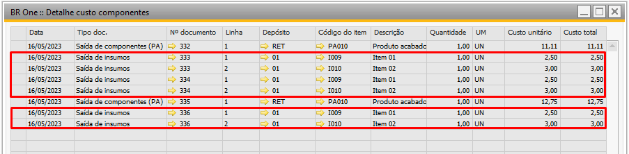Nesse cenário também houve Saída do produto acabado (Troca de lote) na quantidade de 1, aonde o custo unitário nesse momento era de R$ 11,11.
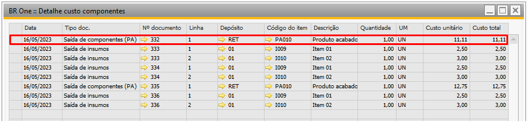{kind=link}
Foi realizado um apontamento de entrada de PA com a flag refugo marcada com a quantidade de 1, assim, o sistema realiza a baixa dos insumos de baixa por explosão e do produto acabado.
Na Saída de insumos realizada para o item I009 de 1 unidades com o custo unitário de R$ 2,50, resultando em um custo total de R$ 2,50. Já o item I010 de 1 unidades com o custo unitário de R$ 3,00, totalizando um custo de R$ 3,00. Para saída do PA de uma unidade com custo unitário de R$ 12,75, resultando em custo total R$ 12,75.
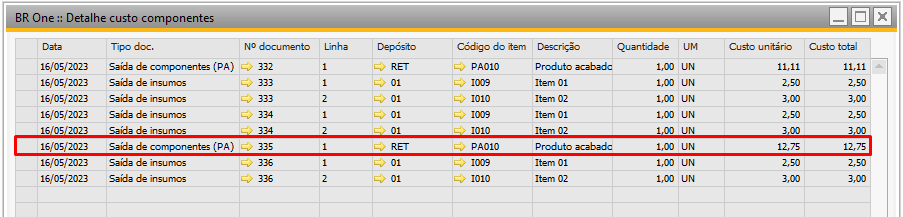{kind=link}
Dessa forma, o custo dos componentes é a soma da coluna de custo total dos detalhes, sendo R$ 40,36.
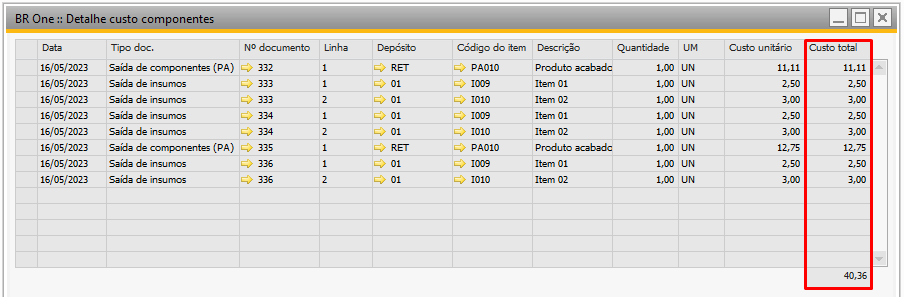{kind=link}
3. Custo atual do PA
Na tela “BR One :: Detalhe custo atual do PA”, são listados todos os documentos gerados como:
Entrada de PA;
Entrada de mercadoria (Troca de lote);
Reavaliação de estoque;
GGF antecipado
O sistema recupera o custo unitário do PA através dos insumos, GGF antecipado e custo do PA retrabalhado.
Na entrada de PA é recuperado o custo dos insumos para produção de 1 PA + o cálculo do GGF antecipado por PA, se houver troca de lote agrega a soma do custo unitário do PA.
Para entrada de produto acabado com troca de lote, o custo dos componentes nesse cenário é de R$ 5,50, o custo do GGF antecipado por PA R$1,42 e o custo da saída do produto acabado de R$ 11,11. O custo unitário do PA será de R$ 18,03.
Para entrada de produto acabado sem troca de lote, o custo dos componentes nesse cenário é de R$ 5,50, o custo do GGF antecipado por PA R$1,42. O custo reavaliado do PA será de R$ 6,92.
Para encontrar o custo do Recurso por PA:
(Custo do recurso encontrado * tempo planejado em horas/quantidade planejada do produto acabado)
(15 * 0,866667 /3) = 1,42
O custo do recurso é de R$ 15,00/hora, o [tempo planejado](#tempoplanejado) transformado em horas é de 0,866667 (ou seja, 52 minutos), a quantidade planejada do produto acabado é 3.
O sistema recupera o custo unitário do PA que será realizado o documento e multiplica pela quantidade, gerando assim o custo total.
Para criação do LCM de GGF antecipado é recuperado o GGF antecipado por PA e multiplicado pela quantidade apontada. No caso 1,42 * 2 = R$2,84.
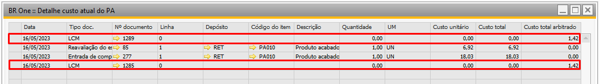{kind=link}
Dessa forma, o custo atual do PA é a soma da coluna de custo total dos detalhes, sendo R$ 24,95.
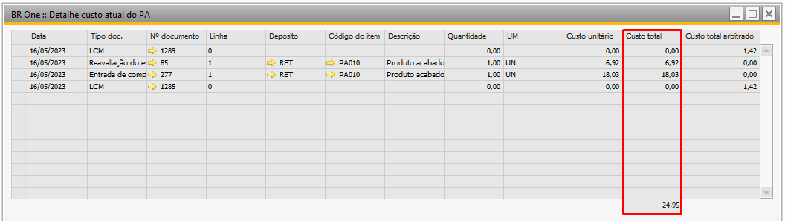{kind=link}
4. Rateios de custo de terceiros
Exibe os documentos que deram origem ao valor do rateio de custos de terceiros.
5. Custo atual do SUB
Na tela “BR One :: Detalhe custo atual do subproduto”, são listados todos os documentos gerados como:
Entrada de Subproduto
Estorno Entrada Subproduto
6. Custo por produto
Para encontrar o custo por produto é realizado o cálculo:
(Custo componentes + GGF antecipado) / Quantidade entrada de PA.
Custo componentes: R$ 40,36
GGF antecipado: R$ 2,84
Quantidade entrada de PA: 2
Custo por produto = (R$ 40,36 + R$ 2,84) / 2
Custo por produto = R$ 21,60
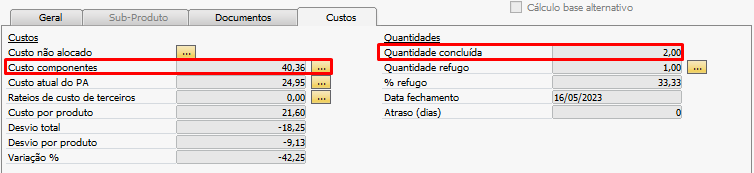 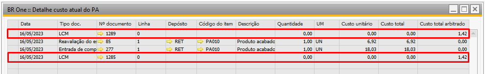{kind=link}
{kind=link}
{kind=link}
7. Desvio total
Para encontrar o desvio total é realizado o cálculo:
Custo atual do PA – (Custo componentes + Rateio de custos de terceiros + GGF antecipado)
Custo atual do PA: R$ 24,95
Custo componentes: R$ 40,36
Rateio de custos de terceiros: R$0,00
GGF antecipado: R$ 2,84
Desvio total = R$ 24,95 – (R$ 40,36 + R$0,00 + R$ 2,84)
Desvio total = R$ -18,25
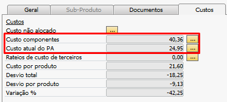 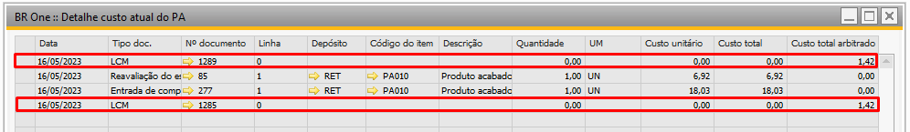{kind=link}
{kind=link}
{kind=link}
8. Desvio por produto
Para encontrar o desvio por produto é realizado o cálculo:
Desvio total / Quantidade entrada de PA
Desvio total: R$ -18,25
Quantidade entrada de PA: 2
Desvio por produto = R$ -18,25 / 2
Desvio por produto = R$ -9,13
{kind=link}
9. Variação %
Para encontrar a variação é realizado o cálculo:
Desvio por produto / Custo por produto * 100
Desvio por produto: R$ -9,13
Custo por produto: R$ 21,60
Variação % = R$ -9,13 / R$ 21,60 * 100
Variação % = -42,25
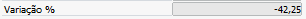{kind=link}
10. Ignorar no fechamento de custos
As OPs que estiverem com essa opção marcada, não serão consideradas no cálculo do fechamento de custo mensal, para realização do rateio dos Gastos gerais de fabricação cadastrados.
11. Quantidade concluída
Soma das quantidades que foram realizados os apontamentos na Entrada de PA.
{kind=link}
12. Quantidade refugo
Quantidade refugada em uma Entrada de PA. Os componentes que tiverem o depósito Item de terceiros em minha propriedade serão desconsiderados.
13. % refugo
Para encontrar o % refugo é realizado o cálculo:
(Quantidade de refugo / (Quantidade de refugo + Quantidade PA)) * 100
Quantidade de refugo: 1
Quantidade PA: 2
% refugo = (1 / (1 + 2)) * 100
% refugo = 33,33
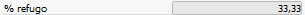{kind=link}
14. Data fechamento
É informado a data que a OP foi fechada
{kind=link}
15. Atraso (dias)
É informado a quantidade de dias de atraso da OP (Data fechamento – Data vencimento)
16. Quantidade pendente
É informado a quantidade de Produto Acabado (PAs) que ainda não foram retrabalhado na Ordem de produção.
Quantidade Pendente = Quantidade Planejada - (Quantidade concluída + Quantidade Refugo) - Quantidade Retornada
{kind=link}
17. Quantidade retornada
É informado a quantidade de Produto Acabado (PAs) que foram retornados na Ordem de produção (OP).
18. Observações do diário
Nas observações do diário são listados todos os lançamentos de ajustes realizados no fechamento da Ordem de Produção. De acordo com o valor do desvio é realizado a validação das movimentações do item e os ajustes são inseridos.
Exemplos:
1. Desvio positivo
1.1 Quantidade em estoque maior ou igual à Quantidade de Entradas de PA
Quantidade em estoque for maior ou igual à quantidade de Entradas de PA, significa que tudo o que foi retrabalhado ainda está no estoque. É realizada somente a reavaliação de estoque do tipo débito/crédito para o item da OP.
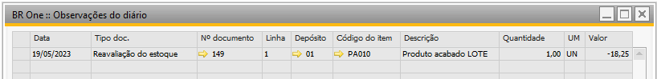{kind=link}
Reavaliação de estoque
Crédito: Conta de estoque
Débito: Conta de material em processo (WIP)
Valor = Desvio total * (-1)
Valor = 18,25 * (-1)
Valor = -18,25
1.2 Quantidade em estoque menor que quantidade de Entradas de PA
Quando a quantidade em estoque for menor que a quantidade de Entradas de PA significa que parte do que foi produzido está no estoque e outra parte foi vendido.
Nesse caso será gerado uma reavaliação de estoque e um lançamento contábil manual.
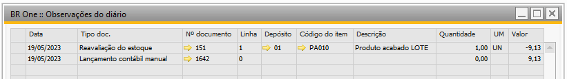{kind=link}
Reavaliação de estoque
Crédito: Conta de estoque
Débito: Conta de material em processo (WIP)
Quantidade estoque = 1
Valor = ((Desvio total / Quantidade de PA) * Quantidade em estoque) * (-1)
Valor = ((18,25 / 2) * 1) *(-1)
Valor = (9,125 * 1) *(-1)
Valor = 9,125 * (-1)
Valor = - 9,125
LCM
Crédito: Conta de custo de produtos vendidos (CPV)
Débito: Conta de material em processo (WIP)
Valor = (Desvio total / Entrada PA) * (Entrada PA - Quantidade em estoque)
Valor = (18,25 / 2) * (2 - 1)
Valor = (9,125) * (1)
Valor = 9,125
1.3 Sem estoque, mas com Entrada de PA
Se não tiver estoque, mas tiver sido feita a entrada de produto acabado, então significa que tudo o que foi produzido já foi vendido. Como não existe estoque para reavaliar, o desvio de custo deverá ser incorporado num LCM, na Conta de custo de produtos vendidos. É realizado apenas um LCM.
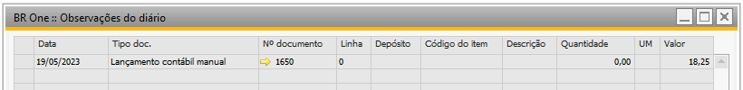{kind=link}
LCM
Crédito: Conta de custo de produtos vendidos (CPV)
Débito: Conta de material em processo (WIP)
Valor = Desvio total
Valor = 18,25
1.4 Quantidade em estoque e valor acumulado menor que desvio calculado
Quando possuir quantidade em estoque igual ou menor que entrada de PA, porém, o valor acumulado do depósito é menor que o desvio calculado para o item.
Nesse cenário podemos ter:
1.4.1 Quantidade de estoque maior ou igual da entrada de PA e valor acumulado menor que desvio calculado.
Será gerado uma reavaliação do estoque e um LCM de desvio de custo.
Verificação da quantidade e valor acumulado do estoque:
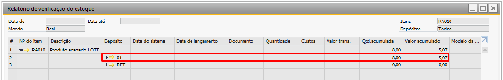 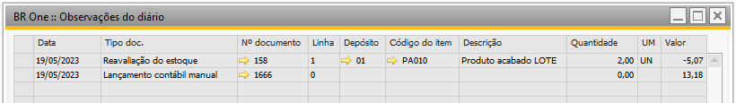{kind=link}
{kind=link}
Reavaliação de estoque
Crédito: Conta de estoque
Débito: Conta de material em processo (WIP)
Valor = Valor acumulado do estoque * (1)
Valor = 5,07 * (-1)
Valor = - 5,07
LCM (Desvio de custo)
Crédito: Conta de desvio do estoque de material em processo
Débito: Conta de material em processo (WIP)
Valor = Desvio total - Valor acumulado do estoque
Valor = 18,25 – 5,07
Valor = 13,18
1.4.2 Quantidade em estoque menor da entrada de PA e valor acumulado menor que desvio calculado
Será gerado uma reavaliação do estoque e um LCM de desvio de custo e um LCM de custo de produtos vendidos.
Verificação da quantidade e valor acumulado do estoque:
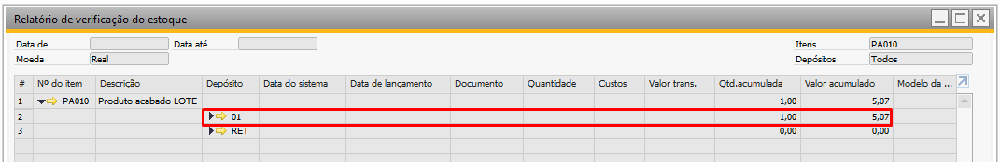 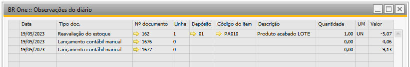{kind=link}
{kind=link}
Reavaliação de estoque
Crédito: Conta de estoque
Débito: Conta de material em processo (WIP)
Valor = Valor acumulado do estoque * (-1)
Valor = 5,07 * (-1)
Valor = -5,07
LCM (Desvio de custo)
Crédito: Conta de desvio do estoque de material em processo
Débito: Conta de material em processo (WIP)
Quantidade em estoque = 1
Valor = ((Desvio total / Quantidade de PA) * Quantidade em estoque) – valor acumulado do estoque
Valor =((18,25 / 2) * 1) – 5,07
Valor = (9,125 * 1) – 5,07
Valor = 9,125 – 5,07
Valor = 4,06
LCM (Custo de produtos vendidos)
Crédito: Conta de custo de produtos vendidos (CPV)
Débito: Conta de material em processo (WIP)
Valor = (Desvio total / Entrada PA) * (Entrada PA - Quantidade Estoque)
Valor = (18,25 / 2) * (2 - 1)
Valor = (9,125) * (1)
Valor = 9,125
2. Desvio negativo
2.1 Quantidade em estoque maior ou igual à quantidade de Entradas de PA
Quantidade em estoque for maior ou igual à quantidade de Entradas de PA, significa que tudo o que foi retrabalhado ainda está no estoque. É realizada somente a reavaliação de estoque do tipo débito/crédito para o item da OP.
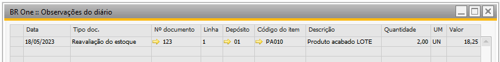{kind=link}
Reavaliação de estoque
Crédito: Conta de material em processo (WIP)
Débito: Conta de estoque
Valor = Desvio total * (-1)
Valor = -18,25 * (-1)
Valor = 18,25
2.2 Quantidade em estoque menor que a quantidade de Entradas de PA
No LCM para desvio negativo, a conta crédito é equivalente à conta de material em processo (WIP), a conta débito é equivalente à conta de custo de produtos vendidos (CPV) do estoque padrão e o valor é (valor desvio /quantidade entrada de PA) * (Quantidade entrada de PA - Quantidade estoque).
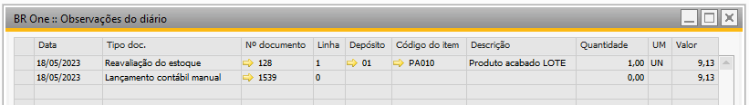{kind=link}
Reavaliação de estoque
Reavaliação de estoque
Crédito: Conta de material em processo (WIP)
Débito: Conta de estoque
Quantidade em estoque = 1
Valor = ((Desvio total / Quantidade entrada de PA) * Quantidade em estoque) * (-1)
Valor = ((R$ -18,25 / 2) * 1) *(-1)
Valor = (- 9,125 * 1) * (-1)
Valor = - 9,125 * (-1)
Valor = 9,125
LCM
Crédito: Conta de material em processo (WIP)
Débito: Conta de custo de produtos vendidos (CPV)
Valor = (Desvio total / Entrada PA) * (Entrada PA - Quantidade Estoque)
Valor = (R$ - 18,25 / 2) * (2 -1) *(-1)
Valor = (- 9,215 * 1) * (-1)
Valor = - 9,215 *(-1)
Valor = 9,215
2.3 Sem estoque, mas com Entrada de PA
Se não tiver estoque, mas tiver sido feita a entrada de produto acabado, então significa que tudo o que foi produzido já foi vendido. Como não existe estoque para reavaliar, o desvio de custo deverá ser incorporado num LCM, na Conta de custo de produtos vendidos. É realizado apenas um LCM.
{kind=link}
LCM
Crédito: Conta de material em processo (WIP)
Débito: Conta de custo de produtos vendidos (CPV)
Valor = Desvio total * (-1)
Valor = - 18,25 * (-1) Valor = 18,25
2.4 Sem Entrada de PA e com ou sem estoque
Quando não existirem entrada de PA, independente se há ou não estoque para o item, se houver um desvio, sempre será um desvio negativo.
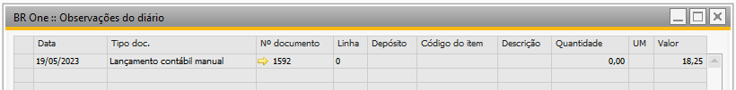{kind=link}
LCM
Crédito: Conta de material em processo (WIP)
Débito: Conta de desvio do estoque de material em processo
Valor = Desvio total * (-1)
Valor = - 18,25 * (-1)
Valor = 18,25